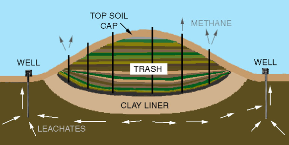

Landfills are engineered sites for the disposal of waste materials that are no longer useful or wanted. They are designed to contain waste within a designated area, prevent pollution, and protect public health and the environment. Landfills are used for disposing of a wide range of materials, including municipal solid waste, construction and demolition debris, and hazardous waste.
The process of landfilling begins with site selection. The location of a landfill must be carefully chosen to ensure that it is geologically stable, free from natural hazards such as flooding and landslides, and located away from sensitive receptors such as residential areas and wetlands. Once a suitable site is identified, the area is excavated to create a pit or depression where the waste will be deposited.
The next step in the process is to install a liner system. The liner system is designed to prevent waste from seeping into the surrounding soil and groundwater. It typically consists of a layer of compacted clay or synthetic material that is placed over the entire base of the landfill. The liner system is designed to be impermeable to liquids and gases, ensuring that the waste remains contained within the landfill.
Once the liner system is in place, waste is deposited into the landfill in layers. Each layer of waste is compacted to maximize the space available and to prevent the escape of gases. As waste decomposes, it produces a liquid called leachate. The leachate is collected and removed from the landfill using a leachate collection system. The leachate is typically treated before being discharged to a wastewater treatment plant or other approved facility.
Landfills also produce methane gas, which is a byproduct of the decomposition of organic waste. Methane is a potent greenhouse gas that contributes to climate change. To minimize the environmental impact of methane emissions, landfill operators install gas collection systems. The gas collection system consists of pipes and vents that are installed throughout the landfill to capture and remove methane gas. The captured methane can then be used as a source of energy or burned off.
The operation of a landfill involves several key components. The first is waste handling, which includes the receipt and inspection of waste materials, the placement and compaction of waste within the landfill, and the daily cover of the waste with soil or other materials. The second component is leachate management, which involves the collection, treatment, and disposal of the liquid that is produced as waste decomposes. The third component is gas management, which includes the capture and control of methane gas emissions from the landfill.
Proper monitoring and maintenance of landfills are essential to ensure that they are operating safely and effectively. Landfills must be regularly inspected to ensure that waste is being properly contained and that there are no environmental or health hazards present. The monitoring program typically includes regular inspections of the landfill liner, leachate collection system, and gas collection system. The monitoring program also includes testing of the surrounding air, soil, and groundwater to ensure that there are no contaminants present that could pose a threat to public health or the environment.
In recent years, there has been an increasing focus on reducing the amount of waste that is sent to landfills. This has led to the development of waste reduction and recycling programs that aim to divert waste from landfills and promote sustainable waste management practices. Some communities have also implemented waste-to-energy programs, which involve the conversion of waste materials into energy that can be used to power homes and businesses.
In conclusion, landfills play a vital role in waste management systems. They provide a safe and controlled environment for the disposal of waste materials, ensuring that they do not contaminate the surrounding environment. Proper site selection, liner systems, waste handling, leachate management, and gas management are essential to ensure that landfills operate safely and effectively.